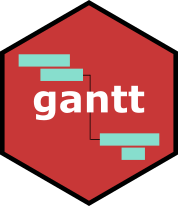

How to finish setting up your new package
Now that you’ve got a working package skeleton, there are a few steps to finish setting up all the integrations:
1. Git(Hub)
Go to https://github.com/yourgithub and create a new repository. Then, in the directory where this package is, create your git repository from the command line, add the files, and push it to GitHub:
2. Travis
Now you can go to Travis and turn on continuous integration for your new package. You may need to click the “Sync account” button to get your new package to show up in the list.
If you have a codecov.io account, running your tests on Travis will trigger the code coverage job. No additional configuration is necessary
3. Appveyor
Go to Appveyor’s new project page and select your new repository from the list. Then you can go to the badges page, copy the markdown code it provides, and paste it up with the other badges above. (Their badge API has a random token in it, so skeletor can’t include it in the template for you.)
Installing
The pre-release version of the package can be pulled from GitHub using the devtools package:
For developers
The repository includes a Makefile to facilitate some common tasks.
Running tests
$ make test. Requires the testthat package. You can also specify a specific test file or files to run by adding a “file=” argument, like $ make test file=logging. test_package will do a regular-expression pattern match within the file names. See its documentation in the testthat package.
Updating documentation
$ make doc. Requires the roxygen2 package.